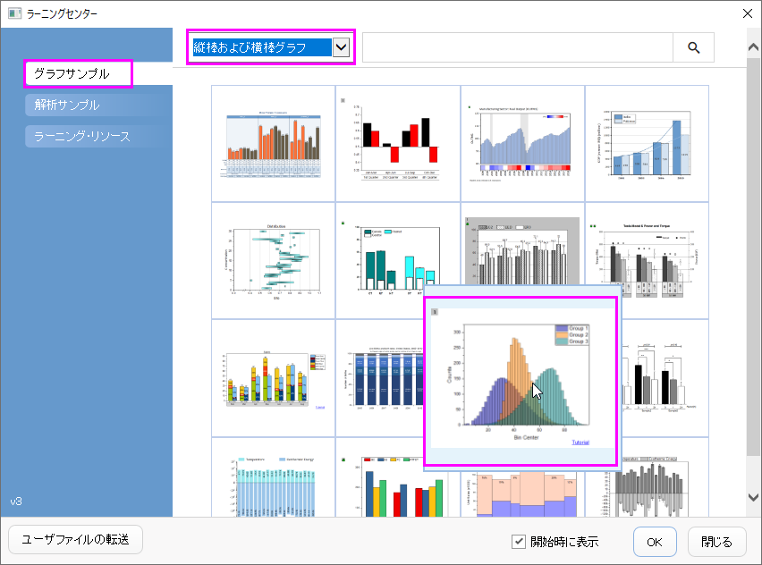
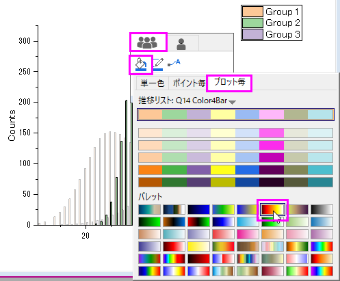
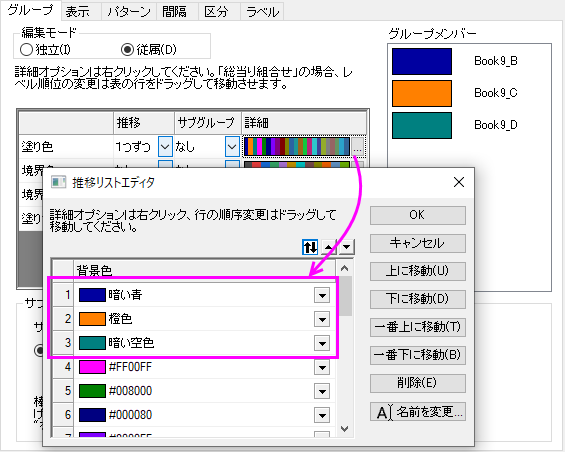
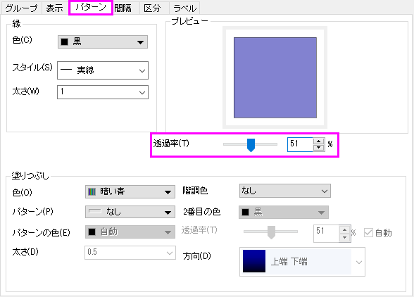
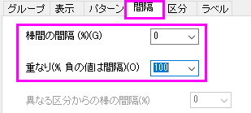

重なったデータをプロットし、透過率を設定する
Customize-Color-Transparancy
サマリー
このチュートリアルでは、重なった縦棒グラフを作成し、重なった部分が見えるように透過率を設定する方法を示します。

学習する項目
このチュートリアルでは、以下の項目について解説します。
- グループ化した縦棒グラフをカスタマイズする
- 透過率を設定する
ステップ
- メニューからヘルプ：ラーニングセンターを選択して、ラーニングセンターダイアログを開きます。ダイアログの左パネルからグラフサンプル
を選択し、サンプルのドロップダウンリストから縦棒および横棒グラフ を選択します。サムネイルをダブルクリックしてOverlapped
Barsフォルダを開きます。

- ワークシート[Counts]Sheet1(元データCounts.datは、フォルダ<Origin
Installation Directory>\Samples\Graphing\からインポートできます。)の全ての列を選択し、メニューから作図>基本の2Dグラフ：縦棒を選択して縦棒グラフを作成します。

- グラフ内の縦棒をどれかクリックし、ミニツールバーを表示させます。グループタブの塗り色ボタン
 をクリックし、カラーチューザーを開きます。プロット毎タブのカラーチューザーで、カラーリストかカラーパレットから縦棒の色を設定します。
をクリックし、カラーチューザーを開きます。プロット毎タブのカラーチューザーで、カラーリストかカラーパレットから縦棒の色を設定します。

 |
グラフをダブルクリックして、作図の詳細ダイアログを開きます。開いたダイアログで、グループタブを選択します。塗り色の詳細ボタンをクリックして、推移リストエディタを開きます。このダイアログで、最初の3つの色が暗い青、橙色、暗い空色のような特別な色になるようにセットします。OKをクリックしてダイアログを閉じます。
 |
- グラフをダブルクリックして作図の詳細ダイアログを開きます。パターンタブを選択し、透過率を51%に設定します。

- 棒の間隔タブを選択し、棒間の間隔を0にし、重なりを100にします。

- OK ボタンをクリックして、作図の詳細ダイアログを閉じます。表示：表示様式：レイヤ枠と選択して枠を表示します。最終的なグラフは下図のようになります。